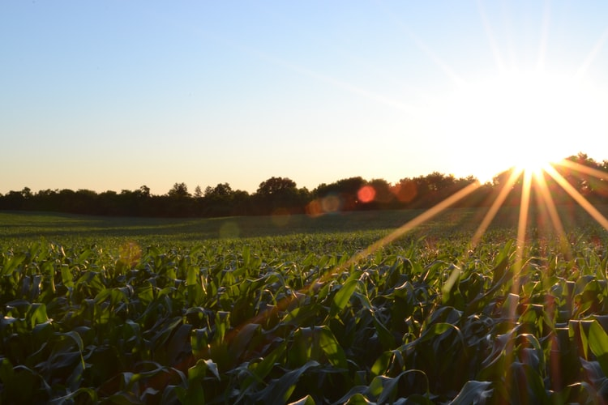
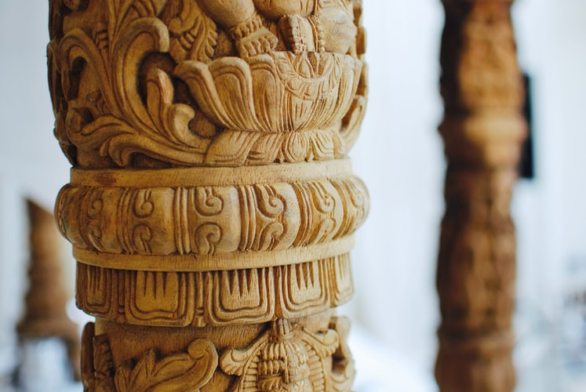

Семейната ферма
Фирма “Семейната ферма” е производител на земеделски продукти. В нея се отглеждат основно български сортове зеленчуци, които са се доказали на българския пазар. В региона тя е единствената фирма, която осигурява работна ръка на над 30 семейства. Фирмата стартира своята дейност през 1993 г., като първоначално се е занимавала с отглеждането на картофи и краставици на площ от около 15 декара. Първите работници били приятели и членове на семейството. Сега се отглеждат над 10 вида зеленчукови култури върху площ от 120 декара, които се продават в местните фирми и магазини.


Арт-leather
Арт-leather e фирма за изработване на чанти, портфейли, ръкавици, аксесоари и бижута от естествена кожа. Това, което ни прави толкова уникални, са нашите висококачествени продукти, съчетани с достъпни цени. Ние преработваме висококачествени кожи до съвършенство, като ги превръщаме в едни от най-добрите кожени изделия в България. За да се уверят клиентите в качеството на нашите изделия, от тази година предлагаме обиколки във фирмения шоурум и работилниците. Нашата фирма предоставяме възможност, за обучение на ученици и студенти, които искат да усвоят знания, свързани с производството на кожени изделия. Те ще придобият уникален опит, свързан с ръчната обработка на кожа и използването на съвременни техники в нейното шиене. Ще се научат да създават продукти от кожа, с които да се гордеят и използват цял живот.

ARD Студио
ARD Студио е студио за създаване на глинени и керамични изделия. Вратите на студиото са отворени за всички с интерес към глината и керамиката. Ние искаме да споделим любовта си към правенето, създаването и експериментирането във всички аспекти при работата с глина. Предлагаме възможности за обучение на желаещи, които искат да развиват и усъвършенстват уменията си за работа с глина и керамика. ARD Студио се управлява от екипа на майка - дъщеря, Елена и Ана. Елена се влюбва в глината, когато се записа на любителски курс, докато е в отпуск по майчинство. След това продължава да учи керамика, изкуство и дизайн. Ана е израснала буквално с глината, научавайки почти всичко, което знае от майка си в студиото. Тя учи компютърна графика и дизайн, като предава своите умения в скулптурно ателие, преди да се прибере обратно в родния си дом, при майка си.

Старата пекарна
Старата пекарна е име на най-старата и автентична семейна пекарна в региона. Тя е основана през далечната 1965 г., като в нея работят вече трето поколение пекари. Непрекъснатите усилия да подобрят качеството и вкуса на храната допринасят за създаването на дългогодишни приятелства с клиентите ни. Водени от страстта си да печем страхотен хляб, закуски и сладкиши ние се усъвършенстваме и развиваме. Ние печем, използвайки най-добрите съставки, които можем да намерим, включително пшенично брашно, ръжено брашно, зърнени култури, като и лимец. За избрани хлябове и сладкиши ние прясно смиламе пълнозърнести брашна в подбрана от нас мелница. Използваме местни ферми за яйца, мляко и млечни продукти, което гарантира високото качество на продуктите. Ние използваме местно произведени съставки и продукти, когато е възможно, и изграждаме трайни отношения с производители от региона.


Печатница “Ян Бибиян”
Ако търсите печатница, която да ви предложи качествен продукт на достъпна цена, тогава се обърнете към нас. Ние сме млад и амбициозен колектив, който е в крак с нуждите на съвременните клиенти. В нашата малка местна печатница работи персонал, който иска да се докаже, като успешна търговска печатница, която може да предложи голяма гама от решения за всеки клиент. Ние осигурява офсетов печат, дигитален печат, широкоформатен печат, табели, дизайнерски и креативни потребителски продукти. Списъкът с продукти, които можем да произвеждаме е безкраен, като всеки клиенти може да разчита на нас за качествен печат, работа в срок и на добра цена. Ние също така можем да предоставим търговска услуга на агенции за графичен дизайн или други печатни компании, за да обслужваме нуждите на своите клиенти.


DAN Сървис
“DAN Сървис” е съвременна фирма за поддръжка на информационни технологии (IT), изграждане и поддръжка на локални мрежи, облачни и инфраструктурни услуги. Тя е специализирана в предоставянето на ИТ услуги и поддръжка на компютърна техника. През последните 5 години се изградиха партньорства с частни и фирмени клиенти. Нашият екип е изграден от млади специалисти със сертифицирано обучение. Те са доказани експерти в различни облачни базирани услуги, виртуална ИТ поддръжка, управление на мрежи, облачно архивиране на данни. Най-важното е, че екипът на “DAN Сървис” има необходимите знания и опит, за да ви помогне в изграждането на вашия бизнес, като ви се изготви анализ и план на оперативните разходи, които да се инвестират в подходящите услуги и технически решения.


Woo-D
Фирма “Woo-D” и строителната индустрия дърводелските услуги и продукти, включително кухни, прозорци, врати, оранжерии и стълбища. Тук ще намерите професионално и надеждно дърводелско обслужване, което ще надмине вашите очаквания. Различните видове мебелни предмети, както врати и дограмата се изработват без използването на железни гвоздеи. Целта е не само да спестите пари, но и да се постигне по-добра визия и издръжливост. Необходимо е много умения и опит, за да се изработи един красив и елегантен предмет от дърво. Всички предварителни и консултантски работи по дърводелството са безплатни, без предварителна оценка, а изработката е на много добра конкурентна цена.


Физалис
“Физалис” е бързо развиваща се кетъринг фирма, гордееща се с качествената храна, която доставя на своите клиенти. Нашата цел е посветена на приемането на всички детайли от вашето специално събитие. Гордеем се с това, че сервираме качествена, свежа иновативна храна с презентация, която представя елегантност и класа. Ние сме специализирани в посрещането на всяка ваша нужда от всяко събитие, голямо или малко. Можем да персонализираме вашето меню, за да отговорим на вашите нужди и вашия бюджет. Независимо дали става въпрос за сватба, корпоративен обяд, репетиционна вечеря, празнично парти, годишнина, събиране или коктейл, ние сме ресторантьорът, на който можете да разчитате. Нашият креативен и опитен персонал гарантира, че вашето специално събитие ще се фокусира върху личното внимание, което вие и вашите гости изисквате. Нашата цел е да осигурим отлично обслужване на клиентите и внимание към детайлите.


Family Delicious Food
Ресторант. Вярваме, че има изкуство към храната и изкуство към живота, а зад двете стои страстта. Ето защо ние, вярваме в ярките аромати на свежите и местни съставки. Ние избираме ежедневно, от малки ферми и производители, винаги най-пресните хранителни продукти. Вярваме в страхотните ястия, които са достъпни за всички. Екипът ни се гордее с това, че предлага страхотна и бърза храна, на която може да се насладите в уюта на вашия дом. Разнообразието от сандвичи, спагети, салати, хамбургери, пица или десерти, могат да задоволят всеки вкус. Ние се гордеем с ефективно и компетентно обслужване, което винаги е с усмивка. Вярваме в упорития труд и всеотдайност, и се забавляваме, докато го правим. Искаме всички от нашия екип да растат, така че инвестираме в обучението и развитието на персонала.


InterTrans2go
В InterTrans2go наистина вярваме във важността да поддържаме отворените опции и ниски цени на куриерските услуги. Ето защо ние предлагаме услуги, които да ви дадат достъп до най-широката гама от куриери, независимо дали търсите куриер за страната или чужбина. По този начин, по-лесно от всякога ще намерите евтина оферта за куриерска услуга, която да отговаря на вашите нужди, както и на вашия бюджет. Ние работим само с куриери, на които наистина се доверяваме, което означава, че ние работим с редица местни куриери, които работят изключително в определени райони, осигурявайки услуги за доставка, които предлагат познания за местната логистика. Каквато и услуга да търсите, със сигурност ще намерите набор от опции, от които да избирате. В нашата мрежа е включен набор от куриерски услуги, които работят с големи фирми, като по този начин постигаме по-евтините куриерски разходи и по-бързи доставки.